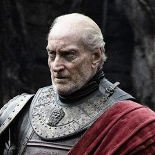
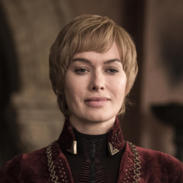
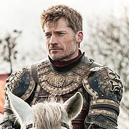
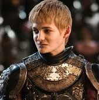
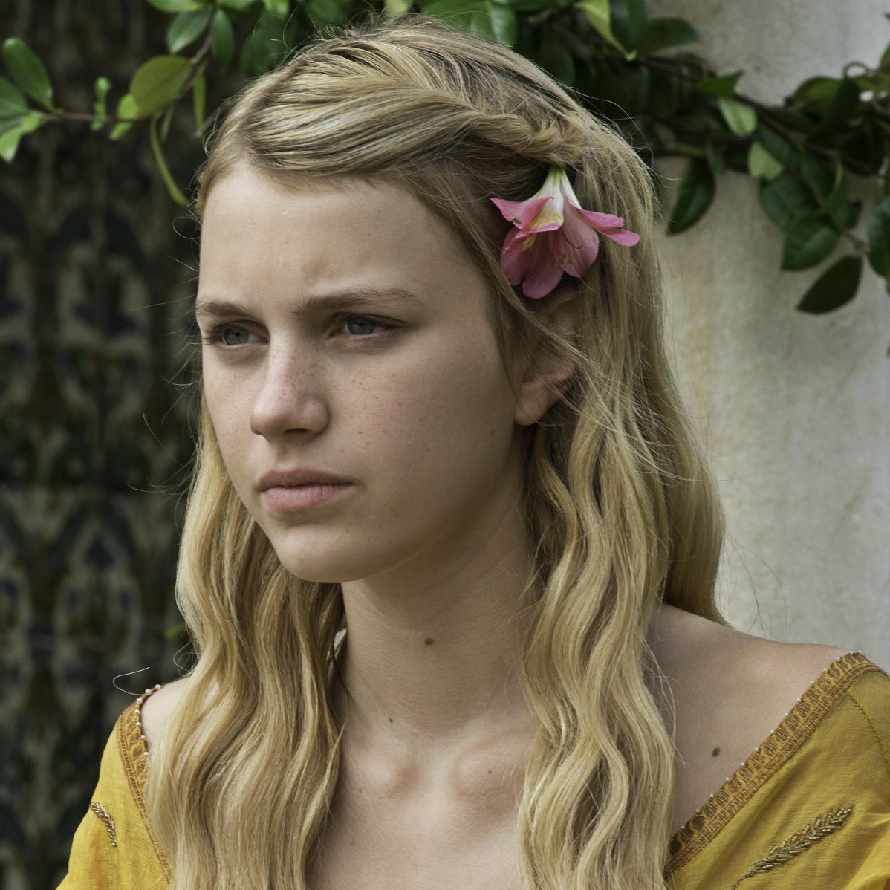
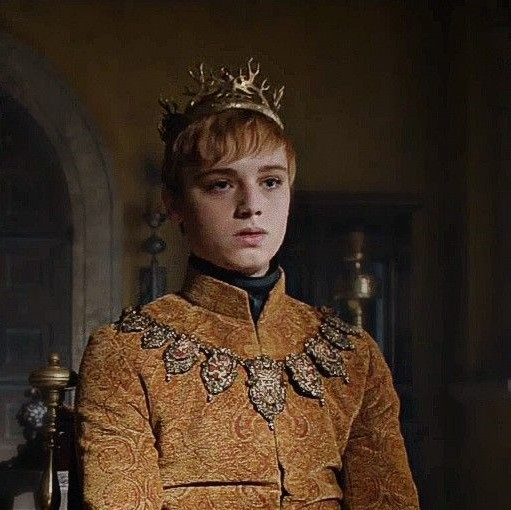

GoTidien
L'actu 100% Game of Thrones, quotidiennement!


L'actu 100% Game of Thrones, quotidiennement!
| IMAGE | PRENOM ET NOM | NAISSANCE | LIENS DE PARENTES | TITRES | MORT |
|---|---|---|---|---|---|
|  | Tywin Lannister | / | Père ou grand-père d'une partie des membres de la famille Lannister |
Seigneur de Castral Roc Gouverneur de l'Ouest Sauveur de la Ville de Port-Réal |
- 67 ans - Tué par son fils Tyrion |
|  | Cersei Lannister | - an 261 - | Fille de Tywin Lannister Soeur de Tyrion et Jaime Lannister |
Reine des Andals et des premiers Hommes (avant) Protectrice du Royaume Défenseure des Terres de l'Ouest |
- 44 ans - Ensevelie lors de la destruction du Donjon Rouge |
|  | Jaime Lannister | - an 261 - | Fils de Tywin Lannister Frère de Tyrion et Cersei Lannister |
Lord Commandant de la Garde Royale (avant) | - 44 ans - Enseveli lors de la destruction du Donjon Rouge |
| Tyrion Lannister | / | Fils de Tywin Lannister Frère de Jaime et Cersei Lannister |
Défenseur des Terres de l'Ouest (avant) Main du Roi (avant) Gouverneur de l'Ouest |
NON | |
|  | Joffrey I Baratheon | - an 282 - | Fils (biologique) de Jaime et Cersei Lannister Frère de Myrcella et Tommen Baratheon |
Roi des Andals et des Premiers Hommes Seigneur des Sept Couronnes Protecteur du Royaume |
- 19 ans - Empoisonné |
|  | Myrcella Baratheon | - an 283 - | Fille (biologique) de Jaime et Cersei Lannister Soeur de Joffrey et Tommen Baratheon |
Princesse | - 15 ans - Empoisonnée |
|  | Tommen I Baratheon | - an 287 - | Fils (biologique) de Jaime et Cersei Lannister Frère de Joffrey et Myrcella Baratheon |
Roi des Andals, de Rhoynar et des Premiers Hommes Seigneur des Sept Couronnes |
- 16 ans - Suicide |